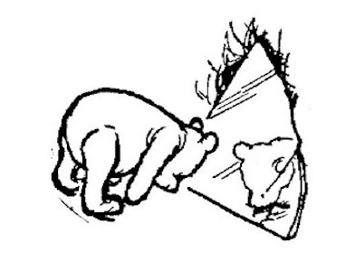
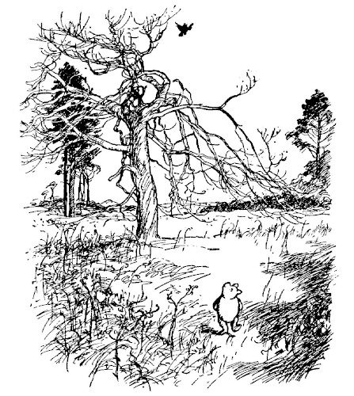
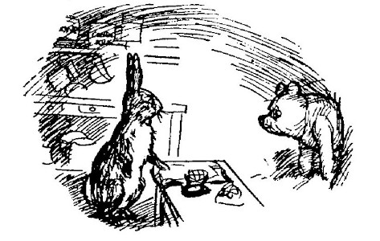
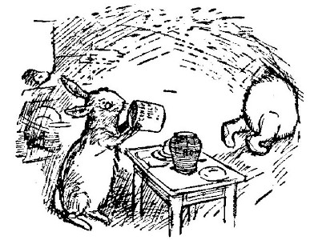
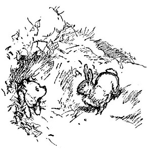
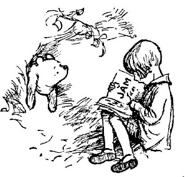
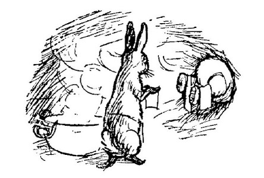
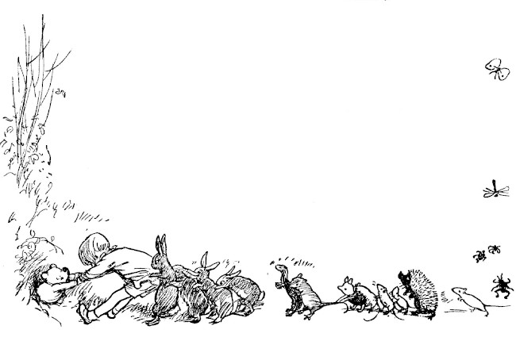

Edward Bear, known to his friends as Winnie-the-Pooh, or Pooh for short, was walking through the forest one day, humming proudly to himself. He had made up a little hum that very morning, as he was doing his Stoutness Exercises in front of the glass: Tra-la-la, tra-la-la, as he stretched up as high as he could go, and then Tra-la-la, tra-la—oh, help!—la, as he tried to reach his toes. After breakfast he had said it over and over to himself until he had learnt it off by heart, and now he was humming it right through, properly. It went like this:

Well, he was humming this hum to himself, and walking along gaily, wondering what everybody else was doing, and what it felt like, being somebody else, when suddenly he came to a sandy bank, and in the bank was a large hole.
"Aha!" said Pooh. (Rum-tum-tiddle-um-tum.) "If I know anything about anything, that hole means Rabbit," he said, "and Rabbit means Company," he said, "and Company means Food and Listening-to-Me-Humming and such like. Rum-tum-tum-tiddle-um."
So he bent down, put his head into the hole, and called out:
"Is anybody at home?"
There was a sudden scuffling noise from inside the hole, and then silence.
"What I said was, 'Is anybody at home?'" called out Pooh very loudly.
"No!" said a voice; and then added, "You needn't shout so loud. I heard you quite well the first time."
"Bother!" said Pooh. "Isn't there anybody here at all?"
"Nobody."
Winnie-the-Pooh took his head out of the hole, and thought for a little, and he thought to himself, "There must be somebody there, because somebody must have said 'Nobody.'" So he put his head back in the hole, and said:
"Hallo, Rabbit, isn't that you?"
"No," said Rabbit, in a different sort of voice this time.
"But isn't that Rabbit's voice?"
"I don't think so," said Rabbit. "It isn't meant to be."
"Oh!" said Pooh.
He took his head out of the hole, and had another think, and then he put it back, and said:
"Well, could you very kindly tell me where Rabbit is?"
"He has gone to see his friend Pooh Bear, who is a great friend of his."
"But this is Me!" said Bear, very much surprised.
"What sort of Me?"
"Pooh Bear."
"Are you sure?" said Rabbit, still more surprised.
"Quite, quite sure," said Pooh.
"Oh, well, then, come in."

So Pooh pushed and pushed and pushed his way through the hole, and at last he got in.
"You were quite right," said Rabbit, looking at him all over. "It is you. Glad to see you."
"Who did you think it was?"
"Well, I wasn't sure. You know how it is in the Forest. One can't have anybody coming into one's house. One has to be careful. What about a mouthful of something?"
Pooh always liked a little something at eleven o'clock in the morning, and he was very glad to see Rabbit getting out the plates and mugs; and when Rabbit said, "Honey or condensed milk with your bread?" he was so excited that he said, "Both," and then, so as not to seem greedy, he added, "But don't bother about the bread, please." And for a long time after that he said nothing ... until at last, humming to himself in a rather sticky voice, he got up, shook Rabbit lovingly by the paw, and said that he must be going on.
"Must you?" said Rabbit politely.
"Well," said Pooh, "I could stay a little longer if it—if you——" and he tried very hard to look in the direction of the larder.
"As a matter of fact," said Rabbit, "I was going out myself directly."
"Oh, well, then, I'll be going on. Good-bye."
"Well, good-bye, if you're sure you won't have any more."
"Is there any more?" asked Pooh quickly.
Rabbit took the covers off the dishes, and said, "No, there wasn't."
"I thought not," said Pooh, nodding to himself. "Well, good-bye. I must be going on."

So he started to climb out of the hole. He pulled with his front paws, and pushed with his back paws, and in a little while his nose was out in the open again ... and then his ears ... and then his front paws ... and then his shoulders ... and then——
"Oh, help!" said Pooh. "I'd better go back."
"Oh, bother!" said Pooh. "I shall have to go on."
"I can't do either!" said Pooh. "Oh, help and bother!"
Now by this time Rabbit wanted to go for a walk too, and finding the front door full, he went out by the back door, and came round to Pooh, and looked at him.

"Hallo, are you stuck?" he asked.
"N-no," said Pooh carelessly. "Just resting and thinking and humming to myself."
"Here, give us a paw."
Pooh Bear stretched out a paw, and Rabbit pulled and pulled and pulled....
"Ow!" cried Pooh. "You're hurting!"
"The fact is," said Rabbit, "you're stuck."
"It all comes," said Pooh crossly, "of not having front doors big enough."
"It all comes," said Rabbit sternly, "of eating too much. I thought at the time," said Rabbit, "only I didn't like to say anything," said Rabbit, "that one of us was eating too much," said Rabbit, "and I knew it wasn't me," he said. "Well, well, I shall go and fetch Christopher Robin."
Christopher Robin lived at the other end of the Forest, and when he came back with Rabbit, and saw the front half of Pooh, he said, "Silly old Bear," in such a loving voice that everybody felt quite hopeful again.
"I was just beginning to think," said Bear, sniffing slightly, "that Rabbit might never be able to use his front door again. And I should hate that," he said.
"So should I," said Rabbit.
"Use his front door again?" said Christopher Robin. "Of course he'll use his front door again."
"Good," said Rabbit.
"If we can't pull you out, Pooh, we might push you back."
Rabbit scratched his whiskers thoughtfully, and pointed out that, when once Pooh was pushed back, he was back, and of course nobody was more glad to see Pooh than he was, still there it was, some lived in trees and some lived underground, and——
"You mean I'd never get out?" said Pooh.
"I mean," said Rabbit, "that having got so far, it seems a pity to waste it."
Christopher Robin nodded.
"Then there's only one thing to be done," he said. "We shall have to wait for you to get thin again."
"How long does getting thin take?" asked Pooh anxiously.
"About a week, I should think."
"But I can't stay here for a week!"
"You can stay here all right, silly old Bear. It's getting you out which is so difficult."
"We'll read to you," said Rabbit cheerfully. "And I hope it won't snow," he added. "And I say, old fellow, you're taking up a good deal of room in my house—do you mind if I use your back legs as a towel-horse? Because, I mean, there they are—doing nothing—and it would be very convenient just to hang the towels on them."
"A week!" said Pooh gloomily. "What about meals?"
"I'm afraid no meals," said Christopher Robin, "because of getting thin quicker. But we will read to you."
Bear began to sigh, and then found he couldn't because he was so tightly stuck; and a tear rolled down his eye, as he said:
"Then would you read a Sustaining Book, such as would help and comfort a Wedged Bear in Great Tightness?"

So for a week Christopher Robin read that sort of book at the North end of Pooh, and Rabbit hung his washing on the South end ... and in between Bear felt himself getting slenderer and slenderer. And at the end of the week Christopher Robin said, "Now!"

So he took hold of Pooh's front paws and Rabbit took hold of Christopher Robin, and all Rabbit's friends and relations took hold of Rabbit, and they all pulled together....
And for a long time Pooh only said "Ow!" ...
And "Oh!" ...

And then, all of a sudden, he said "Pop!" just as if a cork were coming out of a bottle.
And Christopher Robin and Rabbit and all Rabbit's friends and relations went head-over-heels backwards ... and on the top of them came Winnie-the-Pooh—free!
So, with a nod of thanks to his friends, he went on with his walk through the forest, humming proudly to himself. But, Christopher Robin looked after him lovingly, and said to himself, "Silly old Bear!"